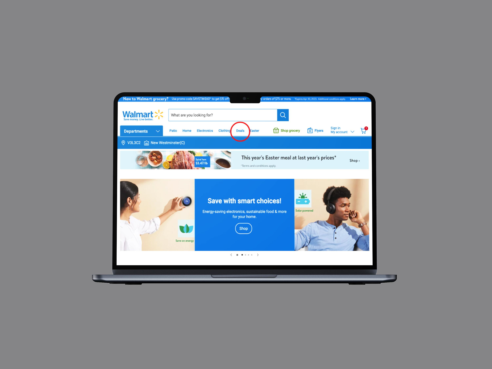
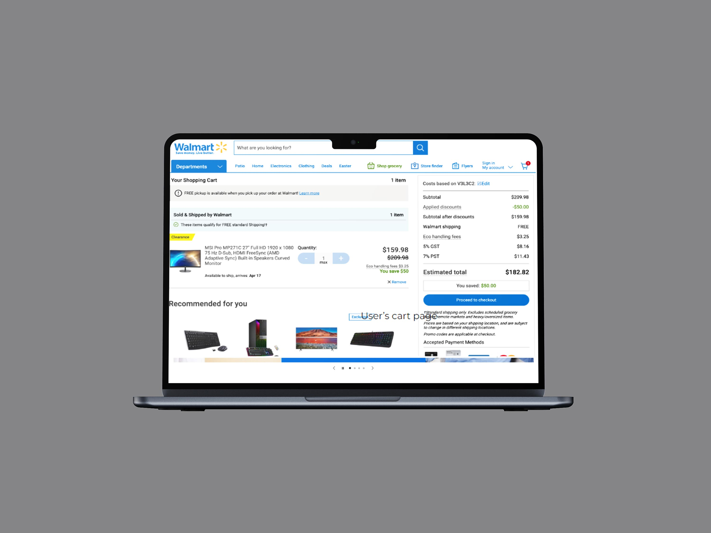

Walmart
UX Research
UI Design
2023

Specs
01
UX Usability Research Test
02
Figma, Google Suite
03
12 Weeks
04
DJ Park, Megan Poon, Nikola Bower
01 Problem
Walmart Canada's website is widely used by e-commerce shoppers, and ranks as one of the most busy Canadian grocery store websites. Albeight this is true, we BCIT students believed there could be improvements to the design of the website, which could potentially lead to increased business profits.
Our Hypothesis was that Walmart Canada's website had 3 major flaws:
- • “Deals” tab is not prominent
- • Absence of CTA for Pick up in store
- • Difficulty in locating the “Subscription” button


02 Strategy
In order to test our hypothesis without spending large amounts of money or manpower, we conducted a small-sized UX research test.
Our strategy involved:
- • Screening and selecting suitable particiapnts
- • Testing the suitable participants
- • Taking their feedback to compare with our initial hypothesis
03 Testing
Based on experience with online shopping, exposure to web browsing, and availability participating in a user test with us, we picked 4 most suitable testers.
These participants were chosen because they represented varying age groups and genders that would shop online. Among the 4, 50% had experience shopping online at Walmart.ca. We believed this participant group to be diverse and inclusive.
The Participants were given 3 tasks to complete, under the guidance of one moderator and one observer that correlated to our hypothesis.
Participant behaviour, reaction, and comments were noted by the observer on a Rainbow Sheet. Tester results were also listed onto scoring cards.
04 Results
Based on our testing of 4 participants, we deemed Hypothesis 1 and Hypothesis 3 to be true, and Hypothesis 2 to be wrong.
Most participants were not able to find the "deals" button in the menu navigation, as it was not prominent enough. Most participants were also not able to find a way to actively subscribe to Walmart's newsletter, indicating an interface design improvement should be executed in order for future Walmart customers to have a better digital experience.
Based on our test results and feedback of participants, we revamped and improved three interfaces and processes of Walmart's website in Figma.
05 Afterhoughts
Based on our testing of 4 participants, we deemed Hypothesis 1 and Hypothesis 3 to be true, and Hypothesis 2 to be wrong.
I realized the utmost importance of Hierarchy, and Visibility.
- • Our assessment revealed the critical importance of organizing content in a manner that aligns with users' mental models. The reordering of menu navigation was a pivotal decision that capitalized on this principle. By prioritizing the most frequently accessed features and placing them prominently within the interface, we facilitated smoother user journeys.
- • The power of a well-structured interface lies in its ability to offer clear visual cues, guiding users seamlessly toward their objectives. Our intervention in adding buttons strategically positioned at points of interaction emerged as a game-changer. These buttons served as signposts, effectively directing users toward essential actions. This enhancement proved particularly impactful for both novice and experienced users, eliminating any uncertainty and allowing users to confidently explore the application's functionalities.